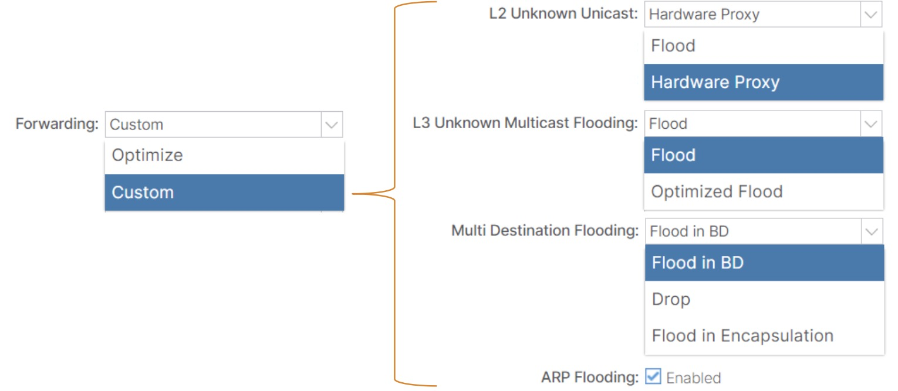

What the APIC Bridge Domain Forwarding knobs actually do, when to use Flood instead of Hardware Proxy, and downloadable Ansible, Terraform and Terragrunt models for eight realistic lab scenarios.
ScopeBD forwarding knobs only — no APIC access
GUI presetOptimize vs Custom
Scenarios8 lab BDs in tenant flood_lab
ModelsAnsible · Terraform · Terragrunt
Preview built27 Nov 2026, 1:59 PM AEDT (Melbourne time)
This page is a lab reference for the bridge-domain Forwarding knobs in the APIC GUI — the Optimize versus Custom preset, and the four Custom settings in the screenshot below. It is written for someone who already works with ACI Network-as-Code. Nothing here was read from or written to an APIC; the models use the placeholder tenant flood_lab and VRF flood_lab_vrf, with credentials only from environment variables.

APIC GUI, Bridge Domain policy. Forwarding is set to Custom, which reveals L2 Unknown Unicast, L3 Unknown Multicast Flooding, Multi Destination Flooding and the ARP Flooding checkbox. Source: Aung’s screenshot, 27 Nov 2026.
These four Custom knobs, plus Unicast Routing (a separate control on the same BD), decide what the leaf does with a frame that is not already a known local or remote endpoint. Optimize is a GUI preset over the first and last of them; it is not an fvBD attribute of its own.
L2 Unknown Unicast — Flood or Hardware Proxy
Applies when the destination MAC is a unicast address that the ingress leaf has not learned. It has no effect on routed traffic whose destination MAC is already the BD MAC (the pervasive gateway).
Hardware Proxy (unkMacUcastAct=proxy) sends the frame to the spine-proxy anycast VTEP. The spine looks the MAC up in COOP. If the MAC is known, the spine forwards to the egress leaf TEP. If it is not in COOP, the frame is dropped — it is not flooded on the BD GIPo tree.
Flood (unkMacUcastAct=flood) encapsulates the frame onto the BD multicast tree (GIPo) so every leaf where the BD is deployed can flood it out of local ports. This is the traditional L2 behaviour, and it is the setting Cisco recommends when unicast routing is disabled or when Layer 2 is extended through non-ACI switches (migration / brownfield).
Modifying L2 Unknown Unicast causes traffic to bounce (go down and up) on interfaces of devices in EPGs associated with the BD. Treat a Flood ↔ Hardware Proxy change as disruptive. When the BD is in Flood mode, enable Clear Remote MAC Entries (epClear) so a deleted endpoint is also flushed on remote leaves, instead of waiting for the endpoint timer.
ARP Flooding
Applies to ARP (and GARP) with a broadcast destination MAC. It does not control other broadcasts — those are under Multi Destination Flooding.
When enabled, ARP is flooded inside the BD (or inside the encapsulation if Flood in Encapsulation is on), as in a classical L2 network. This is required when a Gratuitous ARP must update the ARP caches of neighbouring hosts or routers, which is the usual firewall, load-balancer or clustered-server failover case if the MAC of a VIP changes.
When disabled, the ingress leaf treats the ARP request as unicast L3 traffic keyed by the target IP. If that IP is known, the request is unicasted to the endpoint (locally, or via the spine to the remote TEP). If the IP is unknown, the leaf sends the request to the spine proxy; if the IP is not in COOP, the original packet is dropped and the fabric can trigger ARP gleaning — an ARP from the BD SVI, sent out of the edge ports — so a later retry can succeed. Gleaning needs unicast routing and a BD subnet.
You can only disable ARP flooding when Hardware Proxy is on and unicast routing is on. If either is off, ARP flooding is on and cannot be turned off. If unicast routing is disabled, ARP flooding is implicit even if the checkbox looks available. Silent IP hosts are not, by themselves, a reason to keep ARP flooding on: gleaning can discover them. Silent IP moves without GARP, and GARP to other hosts, are the reasons to leave it on.
L3 Unknown Multicast Flooding — Flood or Optimized Flood
Applies to IPv4 (and, on a separate attribute, IPv6) multicast whose group is not already in the leaf’s IGMP/MLD snooping table. Link-local multicast is a different case.
Flood (unkMcastAct=flood, the creation default) floods unknown multicast on the ingress leaf and the border leaves. On EX and later platforms the frame is flooded on all leaves where the BD is deployed. Optimized Flood (opt-flood) limits that flood: traffic is sent toward mrouter ports and leaves with receivers. mrouter ports are learned from PIM hellos or IGMP/MLD queries, which is why a multicast application BD also enables PIM on the BD and L3 multicast on the VRF. If there is no snooping entry and no mrouter, Optimized Flood can drop the packet.
On pre-EX leaves, Optimized Flood was limited to 50 bridge domains per leaf; that cap does not apply to N9K-93180YC-EX and later EX/FX/GX switches. Do not combine Optimized Flood / PIM with Flood in Encapsulation: IPv4 L3 multicast and IGMP snooping are not supported with FiE.
Multi Destination Flooding — Flood in BD, Drop, or Flood in Encapsulation
Applies to L2 multicast, broadcast and link-layer traffic. It does not set ARP policy and it does not set unknown-unicast policy.
Flood in BD (multiDstPktAct=bd-flood, the default) floods those frames throughout the bridge domain.
Drop (drop) discards them. DHCP clients then need ACI DHCP relay; broadcast cluster heartbeats and PXE will fail.
Flood in Encapsulation (encap-flood) limits BUM, ARP and GARP to the ingress EPG’s VLAN or VXLAN. Endpoints in other EPGs of the same BD communicate with proxy ARP, so the BD must have a subnet and unicast routing. The BD must also be in unknown-unicast Flood mode with ARP flooding on — FiE does not work in Hardware Proxy or ARP unicast mode.
Flood in Encapsulation needs APIC 3.1(1) or later and Nexus 9000 leaves whose names end in EX, FX or later. On an earlier APIC release or a first-generation (non-EX/FX) switch it does not function: no informational fault is raised, but APIC lowers the health score by 1. It is not supported with microsegmentation (intra-EPG isolation, “allow microsegmentation” on a VMM domain, uSeg EPGs, intra-EPG contracts), IGMP snooping, IPv4 L3 multicast, Common Pervasive Gateway, Multi-Site-stretched EPGs/BDs, or mixed first-generation ALE/ASE fabrics. IPv6 NS/ND proxy is not supported, so two IPv6 hosts in the same subnet but different encapsulations may not communicate. The L3 gateway must be in the ACI fabric. Prefer enabling FiE on the BD itself, not only on individual EPGs, so egress and transit leaves do not leak packets into the wrong encapsulation (CSCvx83364, addressed in later 4.2(6), 4.2(7) and 5.2(1) trains). From APIC 3.2(5), VXLAN encapsulations are also supported.
What Optimize sets
In the APIC GUI the Forwarding dropdown is a preset, not a field on fvBD:
Optimize hides the four Custom knobs, sets L2 Unknown Unicast to Hardware Proxy, and sets ARP Flooding to disabled. L3 Unknown Multicast Flooding and Multi Destination Flooding stay at their creation defaults — Flood and Flood in BD — unless you had already changed them under Custom. Unicast Routing remains a separate control (creation default: enabled).
Custom reveals the four knobs in the screenshot, so you can set each one yourself, still subject to the Hardware Proxy + unicast routing constraint on ARP flooding.
Optimize only actually turns ARP flooding off when unicast routing is enabled. A BD subnet is not an fvBD flooding attribute, but you want one on an Optimize L3 BD so ARP gleaning can discover silent IP hosts. If you need Flood, ARP flooding, Drop or Flood in Encapsulation, switch to Custom and set the knobs explicitly — that is what the models on this page do, even for the Optimize-equivalent scenario, so the intended state is visible in Ansible, Terraform and Terragrunt.
Scenario matrix
Eight lab scenarios in tenant flood_lab. Each row is one bridge domain. The recommended settings are the ones in the downloadable models. Click a name for the why and the gotchas.
This is the usual starting point when the fabric is the default gateway. Hardware Proxy sends unknown unicast to the spine COOP anycast proxy instead of flooding the BD GIPo tree, and with unicast routing on, ARP can be forwarded as unicast to a known target IP. Silent IP endpoints can still be discovered with ARP gleaning from the BD subnet.
Gotchas
Changing L2 Unknown Unicast (Flood ↔ Hardware Proxy) is disruptive: traffic bounces on interfaces of EPGs in the BD.
If a firewall or load-balancer failover changes the MAC of a VIP, neighbours will not see the GARP unless ARP flooding is enabled.
Hardware Proxy drops unknown-MAC unicast when the MAC is not in COOP, so truly silent L2 (non-IP) endpoints can black-hole until they are learned.
L2-only BD (unicast routing off)
Pure Layer-2 bridge domain with no BD SVI. Model BD: bd_l2_only.
With unicast routing disabled there is no BD gateway, no IP endpoint learning, and ARP flooding cannot be turned off. Unknown unicast must flood over the BD multicast tree so that silent or remotely attached MAC addresses can still be reached. Clear Remote MAC Entries is enabled so a deleted endpoint is also flushed on remote leaves, which matters in flood mode because remote leaves would otherwise keep the stale MAC until the timer expires.
Gotchas
ARP Flooding is forced on when Hardware Proxy is off or when unicast routing is off; the GUI checkbox cannot actually disable it.
There is no ARP gleaning from a BD SVI, because there is no subnet.
This BD cannot route to other BDs or to an L3Out by itself. An L3Out contract on an L2-only BD does not give it a gateway.
L2 stretched / legacy migration BD
Brownfield VLAN extension onto non-ACI switches, with or without an ACI gateway. Model BD: bd_l2_migration.
Cisco’s best-practice summary is to set L2 Unknown Unicast to Flood when Layer 2 is extended through non-ACI switches, such as during migration. Endpoints (and silent hosts) behind a legacy access layer may never be learned in COOP the way a leaf-attached host is, so Hardware Proxy would drop unknown-MAC frames. ARP flooding keeps GARP and discovery working across the extended segment. Unicast routing can stay on if ACI is already the gateway.
Gotchas
The flood domain now includes the legacy switches. Watch STP, TCN flushes, and the size of the L2 domain.
Do not switch to Hardware Proxy until every endpoint that must be reached by L2 unicast is attached in a way ACI can learn it.
Changing L2 Unknown Unicast later is disruptive.
If the same subnet is also a default gateway on a legacy router, you have two gateways unless you are doing a carefully planned migration (for example, using a common pervasive gateway or moving the SVI).
Silent-host BD (L2 reachability)
Hosts that do not speak first, including some appliances and non-IP devices. Model BD: bd_silent_hosts.
Hardware Proxy drops unicast to a MAC that is not in COOP. If you need Layer-2 unicast to a silent MAC, Flood is the setting that delivers the frame. ARP flooding plus a BD subnet also helps when a silent IP moves without sending GARP: the request is flooded, the host can answer, and the leaf updates the endpoint table. ARP gleaning (which requires unicast routing and a BD subnet) can discover silent IP hosts for routed traffic even under Optimize, so do not enable Flood only because a host is quiet on ARP.
Gotchas
If traffic is almost all routed (destination MAC is the BD MAC), Optimize plus gleaning is usually enough; Flood is for unknown MAC unicast and for GARP/move cases.
If ARP flooding is disabled and a silent IP moves, the leaf may keep unicasting ARP to the old location until the endpoint ages out.
Flooding increases fabric BUM load compared with Optimize.
Flood in Encapsulation (VLAN-per-EPG shared BD)
Several EPGs, each with its own VLAN or VXLAN, sharing one BD. Model BD: bd_flood_in_encap.
Flood in Encapsulation limits ARP, GARP and other BUM to the encapsulation of the ingress EPG instead of every EPG in the BD. Cross-EPG communication in the same BD then uses proxy ARP, which is why the BD must have a subnet and unicast routing. This is the usual pattern when you want VLAN-per-EPG (or VXLAN-per-EPG from APIC 3.2(5)) without creating one BD per VLAN.
Gotchas
Flood in Encapsulation does not work with Hardware Proxy or with ARP unicast mode. The BD must be in flood mode for unknown unicast and ARP flooding must be on.
Requires APIC 3.1(1) or later and Nexus 9000 leaves whose model names end in EX, FX or later. On earlier APIC releases or first-generation (non-EX/FX) switches the feature does not function: no informational fault is raised, but APIC lowers the health score by 1.
Not supported with microsegmentation (intra-EPG isolation, “allow microsegmentation” on a VMM domain, uSeg EPGs, or intra-EPG contracts), IGMP snooping, IPv4 Layer-3 multicast, Common Pervasive Gateway, or EPGs/BDs stretched across Multi-Site (locally defined BDs in a Multi-Site fabric are still fine). Mixed first-generation ALE/ASE topologies are not supported.
IPv6 NS/ND proxy is not supported, so two IPv6 endpoints in the same subnet but different encapsulations may not communicate.
A Layer-3 gateway must be in the ACI fabric. If you enable FiE on all EPGs of a BD, also enable it on the BD. EPG-level FiE takes precedence when mixed. Prefer enabling it on the BD itself so egress/transit leaves do not leak packets into the wrong encapsulation (CSCvx83364, fixed in later 4.2(6)/4.2(7)/5.2(1) trains).
Drop multi-destination (security)
Drop L2 multicast and broadcast in the BD, keep Optimize-style unicast/ARP. Model BD: bd_drop_bum.
Multi Destination Flooding applies to L2 multicast, broadcast and link-layer traffic, not to ARP (which has its own knob) and not to L2 unknown unicast. Setting it to Drop is a tightening control when you do not want those frames flooded in the BD — for example a tightly managed subnet that uses DHCP relay and has no broadcast-based clustering.
Gotchas
Client DHCP broadcasts will be dropped unless you use ACI DHCP relay (the leaf unicasts to the helper).
Broadcast or L2-multicast cluster heartbeats, PXE, and similar protocols will fail.
ARP still follows the ARP Flooding knob. Unknown unicast still follows L2 Unknown Unicast.
Confirm there is no hidden dependency on broadcast before you enable Drop in production.
Multicast application BD
IPv4 PIM in the BD, with Optimized Flood for unknown multicast. Model BD: bd_multicast_app.
Fwd: CustomRouting: OnL2 UU: Hardware ProxyL3 UM: Optimized FloodMulti dest: Flood in BDARP: DisabledSubnet: 10.10.60.1/24PIM: On
When a BD carries real IP multicast, enable PIM on the BD (and on the VRF — that is a VRF-level setting, not included in these BD-only models). Optimized Flood limits unknown L3 multicast (no IGMP/MLD snooping hit) rather than flooding it across the BD. Receivers that have joined are served from snooping state; mrouter ports are learned from PIM hellos or IGMP/MLD queries. L2 multicast and broadcast still use Flood in BD.
Gotchas
Optimized Flood is not a substitute for PIM. If there is no snooping entry and no mrouter port, unknown multicast can be dropped.
On pre-EX platforms, Optimized Flood was limited to 50 BDs per leaf; that limit does not apply to N9K-93180YC-EX and later EX/FX/GX leaves. Flood versus Optimized Flood also differs by platform on which leaves actually flood.
IPv4 Layer-3 multicast and IGMP snooping are not supported together with Flood in Encapsulation. Do not combine this scenario with encap-flood.
The VRF must also allow L3 multicast; enabling only the BD PIM flag is not enough.
Firewall / load-balancer cluster (GARP)
Go-To HA pair whose VIP may move to a new MAC. Model BD: bd_fw_cluster.
Disable-ARP-flooding optimisation stops GARP from being flooded, so neighbouring hosts and routers may keep the old IP-to-MAC mapping after a firewall or load-balancer failover. Cisco’s best practice is to leave ARP Flooding enabled for clustered servers, firewalls and load balancers so GARP can update those caches. Hardware Proxy can stay on for ordinary unknown unicast when the devices are in Go-To (routed) mode. GARP-based endpoint-move detection is also enabled so the fabric updates its own endpoint table when it sees the GARP.
Gotchas
If both HA members can be configured with the same MAC address, neighbour ARP caches may not need a GARP flood; ARP flooding can then be disabled if you want the optimisation.
A Go-Through (transparent) service graph automatically sets the BD to unknown-unicast flood and ARP flood, because those devices often learn like a transparent bridge. You only get to choose Optimize-style settings in Go-To mode.
Hardware Proxy does not change routed traffic whose destination MAC is already the BD MAC.
ARP gleaning is not a substitute for flooding GARP to servers that are not the fabric.
APIC object mapping
Current Terraform names are from the CiscoDevNet/aci Plugin Framework rewrite (v2.16.0 onwards). The models on this page use only the current names. Legacy and current attributes must not be set together.
GUI control
fvBD attribute
APIC values
Ansible aci_bd
Terraform (current)
Legacy Terraform (deprecated)
Forwarding: Optimize / Custom
— (GUI preset only)
Not stored as its own property
Emit the underlying attributes
Emit the underlying attributes
—
L2 Unknown Unicast
unkMacUcastAct
proxy · flood
l2_unknown_unicast
l2_unknown_unicast_flooding
unk_mac_ucast_act
L3 Unknown Multicast Flooding
unkMcastAct
flood · opt-flood
l3_unknown_multicast
l3_unknown_multicast_flooding
unk_mcast_act
IPv6 unknown multicast (not on this screenshot; Policy view)
v6unkMcastAct
flood · opt-flood
ipv6_l3_unknown_multicast
ipv6_l3_unknown_multicast_flooding
—
Multi Destination Flooding
multiDstPktAct
bd-flood · drop · encap-flood
multi_dest
multi_destination_flooding
multi_dst_pkt_act
ARP Flooding
arpFlood
yes · no
arp_flooding (boolean)
arp_flooding (yes/no)
arp_flood
Unicast Routing
unicastRoute
yes · no
enable_routing (boolean)
unicast_routing
unicast_route
PIM (IPv4 L3 multicast)
mcastAllow
yes · no
enable_multicast
pim
—
Clear Remote MAC Entries
epClear
yes · no
Not modelled as a sticky flag: endpoint_clear is a one-shot flush of all endpoints and is omitted from the playbook
clear_remote_mac_entries
—
Endpoint move detection (GARP)
epMoveDetectMode
empty · garp
endpoint_move_detect: default or garp
endpoint_move_detection_mode
—
BD subnet (for gleaning and FiE proxy ARP)
child fvSubnet
gateway/mask
cisco.aci.aci_bd_subnet
aci_subnet with parent_dn of the BD
bridge_domain_dn
VRF association
child fvRsCtx
VRF name
vrf
relation_to_vrf.vrf_name
relation_fv_rs_ctx
Ansible, Terraform and Terragrunt
One parametric set, not eight disconnected copies. The Ansible playbook loops vars/scenarios.yml. The Terraform module takes a scenarios map. Terragrunt has a live/all unit plus one unit per scenario, each wrapping that module. Placeholder names only: tenant flood_lab, VRF flood_lab_vrf. Credentials are read from ACI_URL, ACI_USERNAME, ACI_PASSWORD and, for Terraform/Terragrunt, ACI_INSECURE. There is no password, certificate or real APIC URL in the files. Do not point them at the shared Always-On APIC unless you have written approval to write to that fabric.
cisco.aci.aci_tenant, aci_vrf, aci_bd and aci_bd_subnet, with parameter names checked against the current cisco.aci.aci_bd documentation (l2_unknown_unicast, l3_unknown_multicast, ipv6_l3_unknown_multicast, multi_dest, arp_flooding, enable_routing, enable_multicast). Inventory is a local connection; the APIC is reached only through the environment variables.
A live/root.hcl points terraform.source at the module above and reads APIC settings from the environment. live/all creates every BD; live/<scenario> creates one BD. Each unit sets manage_tenant = true so it is self-contained; apply only one managing unit at a time against the same state, or use the all unit.
Ansible — ansible-playbook --syntax-check playbook.yml with ansible-core 2.19.15 and the cisco.aci 3.0.0 collection: passed (exit 0). An earlier check failed because module_defaults group cisco.aci.aci could not be resolved in this ansible-core build; the playbook now uses a YAML anchor for the login parameters instead. The inventory host was also renamed so it no longer clashes with a group of the same name.
Terraform — terraform fmt -recursive applied (Terraform 1.13.3). terraform init -backend=false installed provider CiscoDevNet/aci v2.22.0 (constraint >= 2.16.0). terraform validate: “Success! The configuration is valid.” A first validate failed because aci_subnet.scope must be a list of strings in the current provider; it is now ["private"]. No terraform plan or apply was run, so the provider never contacted an APIC. The provider lockfile is included; the .terraform/ plugin cache is not.
Terragrunt — terragrunt hcl format (Terragrunt 1.2.3) applied. terragrunt render on the l3-optimized unit resolved root.hcl and the scenario inputs correctly, using the placeholder URL https://apic.example.invalid.
Checked 27 Nov 2026, 1:59 PM AEDT (Melbourne time). Syntax-only: no terraform plan or Ansible run against an APIC, and no APIC access from this job.
Documents were checked on 27 Nov 2026. Release-specific behaviour (Flood in Encapsulation hardware support, Optimized Flood scale, Multi-Site stretch) should be re-checked against the APIC version of the fabric you are changing.
Not on this page
No APIC was queried or written to for this page. The screenshot is the GUI source; behaviour is taken from the Cisco documents in Sources.
VRF-level L3 multicast policy, IGMP snooping policy objects, DHCP relay policy, and L4–L7 service-graph objects are described where they matter but are not in the model files.
Flood in Encapsulation at EPG level (the EPG “Flood in Encapsulation” flag) is explained but not modelled; the models set it on the BD.
An index card on the zFrontier home page is planned for publish time and is not in this preview.
These models have not been applied, planned against a live APIC, or certified on a particular APIC release beyond the document versions cited.
Comments
Use this thread for questions or corrections about ACI bridge-domain flooding scenarios. Sign in with GitHub to comment. Comments are stored as GitHub Discussions in this site’s repository, one thread per page (mapped by pathname).
Versions
This is v1 · 27 Nov 2026, 1:59 PM AEDT. Snapshots are under history/.
v1 (current) · 27 Nov 2026, 1:59 PM AEDT (Melbourne time) · first publication: ACI bridge-domain flooding scenarios (Optimize vs Custom), packet walks, eight lab scenarios, and Ansible, Terraform and Terragrunt models. · history/v1/
Comments
Use this thread for questions or corrections about ACI bridge-domain flooding scenarios. Sign in with GitHub to comment. Comments are stored as GitHub Discussions in this site’s repository, one thread per page (mapped by pathname).